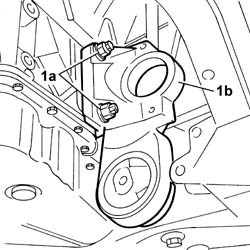

1008C33 BRACKET ON ENGINE FOR LOWER REACTION ROD - R.R.
- Path
- Procedures > 10 ENGINE > 1008 POWER UNIT SUPPORTS > 1008C POWER UNIT REACTION ELEMENTS > 1008C33 BRACKET ON ENGINE FOR LOWER REACTION ROD - R.R.
- Kind
- repair procedure (removal / refitting; the operation number is the code)
- Applies to
- engines: 2.0 16v, 3.0 24V V6; all production periods
- Interactive page
- https://sloeber94.github.io/elrnDB-fUlss/en/#/179006860
Applies to: engines: 3.0 24V V6; all production periods
 Removing
Removing
 Refitting
RefittingOp. 7055B54 UNDER-ENGINE GUARD - R R
Op. 1008C30 POWER UNIT LOWER REACTION LINK R R

Applies to: engines: 3.0 24V V6; all production periods
Refitting
RemovingValue daNm | Fastening | Component | Ø | |
|---|---|---|---|---|
- | 4.5 | Bolts | POWER UNIT WITH AUTOMATIC TRANSMISSION - R.R. | - |
Op. 1008C30 POWER UNIT LOWER REACTION LINK R R
Op. 0010T45 AUTOMATIC TRANSMISSION FLUID - CHECK LEVEL AND TOP UP IF NECESSARY